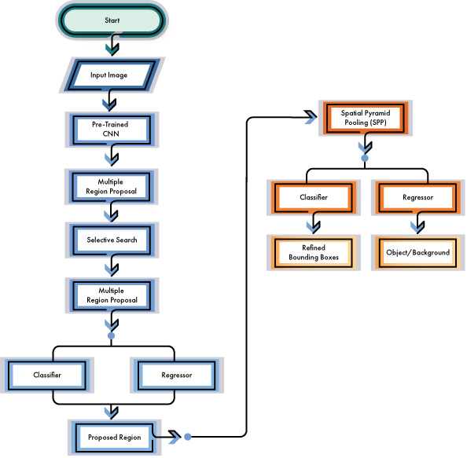
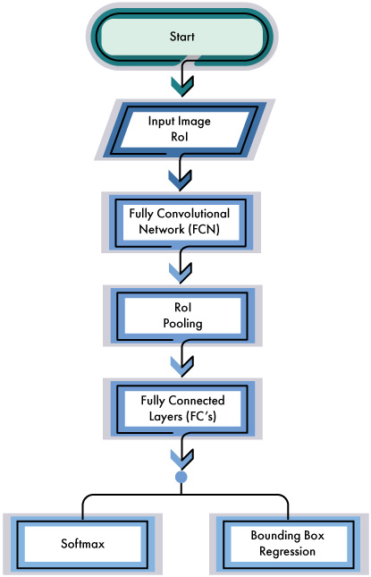
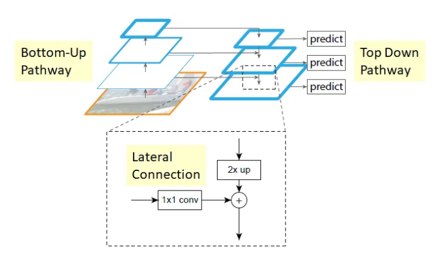
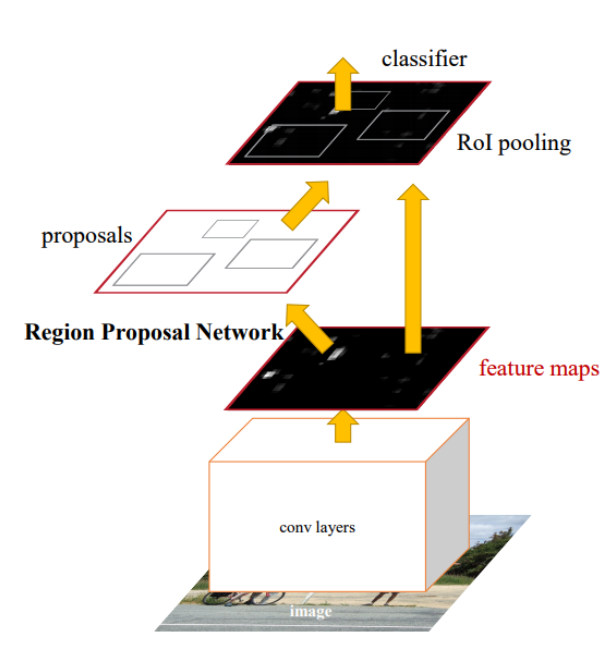
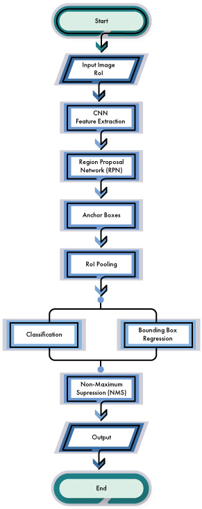
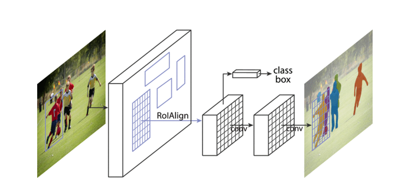
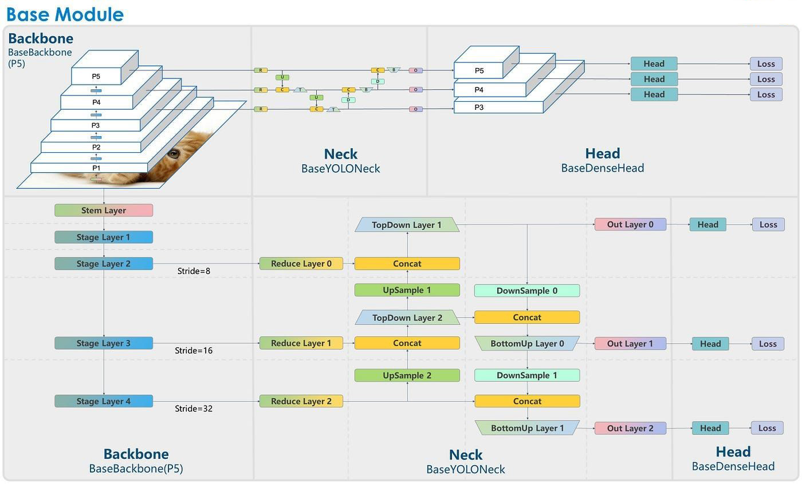

2 Literature Review
The evolution from R-CNN to faster R-CNN represents a significant advancement in object detection algorithms, especially in speed and efficiency. A brief history of the development progression of R-CNN, Fast R-CNN, and Faster R-CNN adds valuable context to our study on object detection architectures. It will help to understand the evolution of these models, the motivations behind their development, and the improvements made over time.
2.1 R-CNN (Region-based Convolutional Network)
R-CNN was a breakthrough in object detection. It employed a multi-stage approach that involved a selective search for generating region proposals followed by a convolutional neural network for feature extraction and a support vector machine (SVM) for object classification within each region.
2.1.1 Region Proposal Generation
R-CNN began with generating region proposals using the selective search algorithm [1]. Selective search is a method for identifying potential object regions in an image based on low-level features such as color, texture, and intensity. It produces a set of bounding boxes that mostly have objects.
2.1.2 Feature Extraction
Following the generation of region proposals, R-CNN employed a pre-trained convolutional neural network to independently extract features from each region. Typically, the chosen CNN model was AlexNet, pre-trained on the ImageNet dataset specifically for image classification tasks.
2.1.3 Selective Search
Selective search employs a Hierarchical Grouping algorithm to detect objects with diverse characteristics such as scales, colors, textures, and enclosures. Initially, the method utilizes the Felzenszwalb and Huttenlocher [2] approach to segment the image into regions and obtain a set of initial regions. The grouping algorithm is detailed in the provided Algorithm.
2.1.4 Fine-tuning and Classification
Following feature extraction, the extracted features were input into a distinct classifier to ascertain the presence of objects within the regions. R-CNN utilized a support vector machine (SVM) [1] for this classification task. Each SVM was trained to discern whether the feature corresponded to a particular object or background.
2.1.5 Bounding Box Regression
Following classification, R-CNN conducted bounding box regression to enhance the accuracy of the detected object locations. This process adjusts the bounding boxes produced by the region proposal algorithm to align more precisely with the actual object locations within the regions.
2.1.6 Non-Maximum Suppression
Lastly, R-CNN implemented non-maximum suppression to eliminate redundant detections, ensuring that each object is detected only once.
2.1.7 Drawbacks
An initial drawback of the R-CNN architecture was its computational inefficiency during inference, primarily stemming from its sequential processing of region proposals. Processing each region proposal independently led to redundant computations and prolonged inference times.

2.2 Fast R-CNN
Fast R-CNN, a significant advancement in object detection, introduces several innovations enhancing both training and testing efficiency while improving detection accuracy. Unlike its predecessors, Fast R-CNN leverages the VGG16 network, achieving a remarkable 9x increase in training speed compared to R-CNN [3]. At test-time, Fast R-CNN demonstrates an impressive speed improvement of 213x, making it significantly faster, and more practical for real-world applications. Additionally, Fast R-CNN outperforms previous methods in terms of mean Average Precision (mAP) on benchmark datasets like PASCAL VOC 2012 [3].
Fast R-CNN tackles the computational inefficiencies of R-CNN by introducing a unified architecture that consolidates region proposal generation, feature extraction, and object classification into a single network. This approach dramatically reduces redundant computations, and accelerates the inference process.
2.2.1 Architecture
Expanding upon its architecture, Fast R-CNN incorporates several key components to achieve its performance gains. Fast R-CNN addresses the speed and efficiency limitations of R-CNN by proposing a unified architecture that integrates region proposal generation, feature extraction, and object classification into a single network.
Firstly, it utilizes a Region Proposal Network (RPN) to generate region proposals directly from the convolutional feature maps, eliminating the need for external proposal methods like selective search. The RPN functions by sliding a small grid (essentially a compact CNN) across the evolving feature map to predict the spatial dimensions (bounding boxes) and associated probability scores for objects within each sliding window. This streamlines the detection process and enhances efficiency. Furthermore, Fast R-CNN introduces the Region of Interest (RoI) pooling layer [3], allowing feature extraction from region proposals of varying sizes without the need for expensive resizing operations. This enables precise alignment of features with the corresponding regions of interest, leading to improved localization accuracy. Moreover, Fast R-CNN adopts a unified network architecture, enabling end-to-end training of both the region proposal and object detection tasks. This approach ensures better optimization, and facilitates seamless integration of different components, contributing to the overall efficiency and effectiveness of the model.
2.2.2 RoI Pooling Layer
The RoI pooling layer employs max pooling to transform features within any valid region of interest into a compact feature map with a fixed spatial extent of H × W (e.g., 7 × 7) [3], where H and W are layer hyper-parameters independent of any specific RoI. A more efficient training strategy leverages feature sharing throughout the process. During Fast R-CNN training, stochastic gradient descent (SGD) minibatches are hierarchically sampled: N images are initially sampled, followed by R/N RoIs from each image. Notably, both during forward and backward passes, ROIs from the same image share computation and memory. Fixed-size feature maps yielded from RoI pooling are input to fully connected layers for object classification and bounding-box regression. Feature classification aims to detect features and assign class probabilities for each proposed location, while bounding box regression seeks to enhance the localization accuracy of detected features. Fast R-CNN introduces multitasking loss functions that amalgamate classification and bounding box regression losses. This enables joint training of both tasks, ensuring the network learns to predict object location and precise bounding boxes concurrently.

2.2.3 Advantages of Fast R-CNN
In contrast to R-CNN, which comprises multiple independent steps (such as region proposal generation, feature extraction, classification, and bounding box regression), Fast R-CNN integrates these processes within a unified network architecture. This enables end-to-end training of the entire pipeline, leading to improved optimization and potentially higher accuracy. Fast R-CNN achieves variable sharing across all spatial dimensions of an image. Unlike R-CNN, which extracts features independently for each image, Fast R-CNN performs feature extraction on the entire image only once. This shared computation across convolutional features significantly minimizes redundant calculations, expediting the inference process.
2.3 Faster R-CNN
Compared to preceding methodologies, Faster R-CNN achieves more efficient object recognition by seamlessly integrating regional proposal steps directly into the network architecture. Subsequent advancements have expanded upon this framework, establishing it as a fundamental component in object recognition. The architecture commences with a feature extraction backbone, typically a convolutional neural network (CNN) pre-trained on extensive datasets such as ImageNet. This backbone extracts pertinent features from the input image.
2.3.1 Region Proposal Network (RPN)
Faster R-CNN further improves the efficiency of object detection by introducing the Region Proposal Network (RPN), which generates region proposals directly from the convolutional feature maps. It eliminates the need for external region proposal methods like Selective Search, resulting in faster and more accurate proposal generation.
The feature maps derived from the backbone network are input to a Region Proposal Network (RPN) [4]. The RPN, a compact fully convolutional network, employs a sliding window approach (typically 3x3) over the feature maps to generate region proposals. The RPN yields a collection of bounding box proposals accompanied by objectness scores, indicating the probability of containing an object. These proposals are generated by leveraging predefined anchor boxes of varying scales and aspect ratios.
2.3.2 Anchor Boxes
The RPN generates region proposals by predicting offsets and scales for a predefined set of anchor boxes at each spatial position in the feature maps. These anchor boxes, varying in size and aspect ratio, serve as reference boxes for the proposal generation process.
2.3.3 Region of Interest (RoI)
Region of Interest (RoI) refers to a specific area or region within an image that is selected for further analysis or processing. In the context of object detection and image segmentation tasks, RoIs typically represent regions where objects of interest are located.
2.3.4 Feature Pyramid Network (FPN)
Feature Pyramid Network (FPN) stands as a pivotal advancement in object detection methodologies, offering a robust solution for handling objects of varying scales and complexities. FPN, introduced by Facebook AI Research (FAIR), Cornell University, and Cornell Tech, integrates a pyramidal feature hierarchy that combines low-resolution, semantically strong features with high-resolution, semantically weak features through top-down pathways and lateral connections.

This innovative approach ensures rich semantic information at all levels without compromising speed or memory efficiency. The FPN architecture has demonstrated superior performance in region proposal networks (RPN) and detection networks, showcasing remarkable improvements in detecting small objects and enhancing robustness to scale variations.

2.3.5 Classifier and Bounding Box Regressor
The RoI-pooled features are separately input into branches for classification and bounding box regression.
- Classification: The features traverse a classifier (e.g., fully connected layers followed by softmax) to predict the probability of each region proposal belonging to different object classes. Bounding Box Regression: Another set of fully connected layers predicts refined bounding box coordinates for each region proposal.
- Loss Function: The network undergoes end-to-end training using a multi-task loss function, which combines losses from the RPN (objectness score prediction and bounding box regression) with those from the classification and bounding box regression branches.
2.3.6 Non-Maximum Suppression (NMS)
Following prediction, non-maximum suppression is employed to discard redundant and overlapping detections based on their confidence scores and bounding box coordinates.
2.3.7 Output
The final output comprises a collection of object detections alongside their bounding boxes and corresponding class labels.

2.3.8 Advantages of Faster R-CNN
- Efficient Region Proposal Generation: The Region Proposal Network (RPN) significantly reduces the computational load of region proposal methods, enabling nearly cost-free region proposals by sharing convolutional features.
- End-to-End Training: RPN and Fast R-CNN can be jointly trained to share convolutional features, leading to a unified network architecture.
- High-Quality Proposals: RPN produces high-quality region proposals, enhancing detection accuracy compared to traditional methods like Selective Search and EdgeBoxes.
- Practical Implementation: The proposed method achieves state-of-the-art object detection accuracy on benchmarks like PASCAL VOC [4] while maintaining a practical frame rate of 5fps on a GPU.
2.4 Mask R-CNN
Mask R-CNN extends Faster R-CNN by adding a branch to predict the segmentation mask at each Region of Interest (RoI), alongside existing branches for classification and bounding box regression. This is achieved by introducing a small, fully convolutional network on top of each RoI. Below we briefly describe the architecture components.
2.4.1 Backbone CNN
Similar to Faster R-CNN, Mask R-CNN begins with a backbone that extracts features from the input image. This backbone network is typically pre-trained on a large dataset like ImageNet to learn generic image features.
2.4.2 Region Proposal Network (RPN)
The RPN takes feature maps from the backbone network and generates region proposals using anchor boxes, refined based on their likelihood of containing objects. The region proposals generated by the RPN are subsequently used for both object detection, and instance segmentation in the Mask R-CNN framework.
2.4.3 Region of interest Align (RoIAlign)
For each region proposal generated by the RPN, features are extracted from the feature maps using RoIAlign. RoIAlign is a technique used in CNNs for object detection tasks. RoIAlign improves upon RoIPool, a previous method, by eliminating the quantization step in the pooling operation, resulting in more accurate feature extraction from regions of interest [6]. It precisely aligns features extracted from arbitrary-shaped regions with the spatial layout of the feature map, enabling more accurate object localization and segmentation.
The RoIAlign layer extracts features from each region proposal, preserving spatial information better than previous pooling methods, ensuring accurate alignment of features with the region of interest.
2.4.4 Parallel Branches
Mask R-CNN introduces parallel branches for object detection and instance segmentation.
- Object Detection Branch: Determines the class of each object within the region proposal and refines bounding box coordinates through classification and regression. – Mask Prediction Branch: Predicts segmentation masks for each object within the region proposal, generating pixel-level masks for object instances using a small fully convolutional network applied to each RoI.
- Loss Functions: Mask R-CNN employs a multi-function loss function that combines object detection (classification and bounding box regression) and instance segmentation (mask prediction) losses, weighted by hyperparameters.
\[ L = L_{cls} + L_{box} + L_{mask} \]
- Training: The entire Mask R-CNN network is trained end-to-end using backpropagation with stochastic gradient descent (SGD) or other optimization algorithms, typically starting with pre-trained weights and fine-tuning for the specific task.

2.4.5 Advantages over Faster R-CNN
- Offers pixel-level segmentation alongside object detection and bounding box regression.
- Facilitates instance segmentation, segmenting each object instance in an image separately.
- Enhances understanding of object shapes and boundaries with finer detail.
- Despite increased complexity, maintains comparable speed and efficiency, particularly in scenarios necessitating instance-level segmentation.
Overall, Mask R-CNN represents a substantial advancement over previous methods by integrating object detection and instance segmentation into a unified architecture, rendering it a versatile solution for diverse computer vision applications.
2.5 YOLO (You Only Look Once)
YOLO (You Only Look Once) is a popular object detection algorithm that revolutionized the field of computer vision due to its speed and accuracy [8]. YOLO processes images in a single pass through a neural network, enabling real-time object detection. YOLOv8 is one of the iterations of the YOLO algorithm, incorporating various improvements over its predecessors to enhance performance and efficiency.
2.5.1 Architecture
The architecture of YOLO consists of a backbone network, detection head, and output layers. The backbone network, typically based on Darknet or CSPDarknet, extracts features from the input image [9]. These features are then processed by the detection head, which predicts bounding boxes, confidence scores, and class probabilities for detected objects. Earlier YOLO models utilizes anchor boxes [9] to improve localization accuracy and efficiency. Finally, the output layers produce the final detection and confidence scores.

2.5.2 Anchor-Free Approach
YOLOv8 employs an anchor-free approach [11], eliminating the need for predefined anchor boxes. This simplifies the training process and improves model flexibility.
2.5.3 Efficient Backbone
YOLO utilizes lightweight backbone networks such as CSPDarknet53, which strikes a balance between performance and computational efficiency
2.5.4 Improved Object Detection
YOLO incorporates advanced techniques such as focal loss, which helps to address class imbalance and improve object detection accuracy [12].
2.5.5 Real-Time Performance
YOLOv8 is optimized for real-time object detection applications [11], offering fast inference speeds without compromising accuracy.
2.5.6 Advantages over Mask R-CNN
Both Mask R-CNN and YOLOv8 are instance segmentation models; however, Mask R-CNN is better suited for semantic segmentation while YOLOv8 is not initially designed for that purpose. Both models are pre-trained on the MS-COCO dataset. Mask R-CNN is an improved version of Faster R-CNN and uses ResNet-101 as its backbone and has the addition of the prediction of object masks. YOLOv8 uses CSPDarknet53 as its backbone, which has 53 convolutional layers.
The main difference between YOLOv8 and Mask R-CNN is the region proposal network. YOLOv8 is an anchor free model so it does not need a region proposal network. Another difference between the two models is that Mask R-CNN is a two stage model and YOLOv8 is a one stage model. The first stage of Mask R-CNN is the application of the region proposal network and the second stage executes “bounding box regression, classification, and mask prediction” [13].
On the other hand, YOLOv8 has one stage that consists of “directly predicting bounding boxes and class labels for objects in an image” [13]. YOLOv8 and Mask R-CNN also differ in their loss functions. YOLOv8 uses complete intersection over union loss, distribution focal loss, and binary cross entropy. Mask R-CNN uses classification loss, regression loss, and mask loss. In addition YOLOv8 is best used for real time object detection with low latency [13].